9주차 · 함수와 변수 (스코프)¶
C언어 · 미래모빌리티학과 | CLO1·CLO2 | 교재 Ch09 | 원본 PDF:
9-1. 함수와 변수,9-2. 함수와 변수 실습
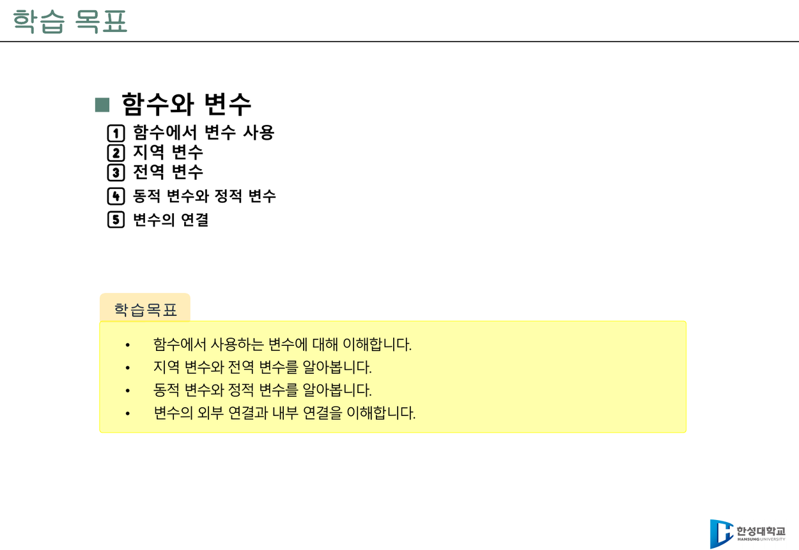
학습 목표¶
- 함수에서 변수를 사용할 때 선언 위치가 의미하는 바를 설명할 수 있다.
- 지역변수(local variable)와 전역변수(global variable)의 사용 범위와 수명을 구분할 수 있다.
- 지역변수를 초기화하지 않았을 때 생기는 문제를 설명하고 수정할 수 있다.
- 매개변수가 함수 안에서 지역변수처럼 동작한다는 점을 이해할 수 있다.
- 전역변수와 지역변수의 이름이 같을 때 어떤 변수가 우선되는지 예측할 수 있다.
auto,static,extern,register의 기본 의미와 사용 주의점을 설명할 수 있다.- Arduino UNO R4 WiFi와 ROS2 예제에서 상태를 어느 변수에 저장해야 하는지 판단할 수 있다.
이번 주차의 큰 그림¶
7주차에서 함수로 코드를 나누는 방법을 배웠다. 9주차에서는 함수 안팎에 있는 변수가 어디에서 보이고, 언제 만들어지고, 언제 사라지는지를 배운다. 같은 int count라도 함수 안에 있으면 지역변수이고, 함수 밖에 있으면 전역변수다. static이 붙으면 보이는 범위는 좁게 유지하면서 값은 오래 기억하게 만들 수도 있다.
모빌리티·로봇 프로그램에서는 이 차이가 중요하다. 예를 들어 로봇의 현재 상태(RUN, STOP)를 아무 함수나 바꿀 수 있는 전역변수로 두면 편하다. 하지만 어느 함수가 언제 상태를 바꾸었는지 찾기 어려워진다. 반대로 모든 값을 지역변수로만 두면 함수가 끝날 때 값이 사라져 이전 상태를 기억할 수 없다. 이번 주차의 핵심 질문은 다음과 같다.
이 세 질문에 답할 수 있으면 지역변수, 전역변수, 정적 변수, 외부 연결을 훨씬 안정적으로 사용할 수 있다.
교수자 설명 포인트
변수는 값을 저장하는 그릇이지만, 그 그릇을 어디에 놓느냐가 설계다. 지역변수는 안전하고, 전역변수는 편하며, static 지역변수는 숨겨진 기억장치처럼 동작한다. 편한 선택이 항상 좋은 설계는 아니라는 점을 예제로 보여 준다.
3시간 강의 운영안¶
| 시간 | 내용 | 교수자 진행 포인트 | 학생 활동 |
|---|---|---|---|
| 0~10분 | 7주차 함수 복습 | main()에서 함수를 호출할 때 값이 어떻게 전달되는지 확인 |
함수 호출 흐름 다시 그리기 |
| 10~25분 | 변수의 속성 | 변수의 선언 위치가 사용 범위와 수명을 결정한다는 큰 그림 설명 | 코드에서 지역/전역 표시 |
| 25~45분 | 지역변수 | 블록 {} 안에서만 보이는 범위, for문 안 변수 오류 설명 |
sum 오류 코드 수정 |
| 45~65분 | 지역변수 초기화 | 초기화하지 않은 지역변수의 위험, Visual Studio 경고 확인 | 초기화 누락 찾기 |
| 65~80분 | 매개변수 | 매개변수는 함수 호출 때 인수 값으로 초기화되는 지역변수임을 설명 | 값 전달 결과 예측 |
| 80~105분 | 전역변수 | 프로그램 시작부터 종료까지 유지, 자동 0 초기화, 공유 상태 설명 | 전역변수 사용 예제 실행 |
| 105~120분 | 이름 가림 | 지역변수가 전역변수보다 우선되는 예제 추적 | 출력값 손으로 예측 |
| 120~140분 | auto/static | 동적 변수와 정적 변수의 생성·소멸, static 카운터 실습 |
호출 횟수 출력 비교 |
| 140~160분 | extern/static 전역 | 외부 연결과 내부 연결, 여러 소스 파일 프로젝트 설명 | extern 선언 위치 표시 |
| 160~170분 | register | 현대 C에서 거의 쓰지 않는 이유와 주소 연산자 제한 설명 | ®ister변수 오류 예측 |
| 170~180분 | Arduino/ROS2 연결 | 상태 변수, 누적 카운터, 콜백 상태 관리로 확장 | 상태 저장 위치 토론 |
이론-실습 연결표¶
| 이론 개념 | 바로 해볼 실습 | 확인 질문 |
|---|---|---|
| 스코프는 이름이 보이는 범위다 | 블록 안팎에서 같은 변수명을 사용해 본다 | 어느 줄에서 어떤 변수가 보이는가? |
| 생명주기는 변수가 살아 있는 시간이다 | local, global, static 카운터를 비교한다 | 함수가 끝난 뒤에도 값이 남는 변수는 무엇인가? |
| 전역변수는 공유되지만 위험하다 | Arduino 상태값을 전역/지역/static으로 바꿔 본다 | 누가 값을 바꾸었는지 추적하기 쉬운 구조인가? |
| ROS2 콜백 상태 | 콜백이 공유 상태를 읽고 쓰는 상황을 표로 그린다 | 상태를 어디에 두어야 안전하게 설명할 수 있는가? |
1. 변수의 속성: 위치가 의미를 만든다¶
원본 강의자료는 먼저 지역 변수와 전역 변수를 선언 위치로 구분한다.
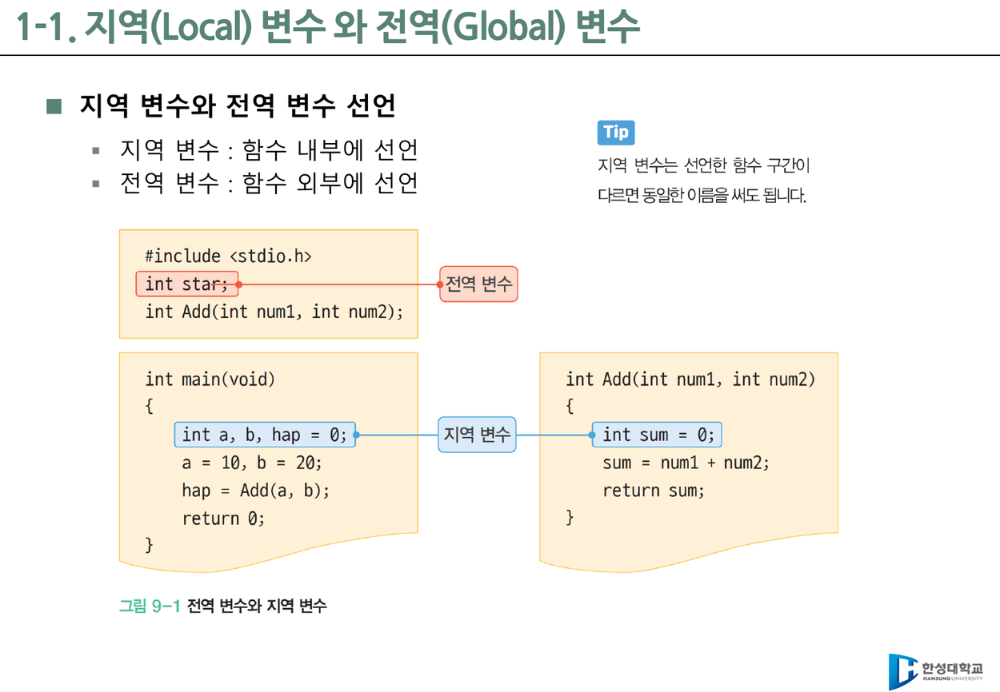
변수의 속성은 크게 네 관점으로 나누어 볼 수 있다.
| 관점 | 질문 | 대표 예 |
|---|---|---|
| 스코프(scope) | 이 이름을 어디에서 볼 수 있는가? | 블록 안, 함수 안, 파일 전체 |
| 수명(lifetime) | 이 값은 언제 만들어지고 언제 사라지는가? | 함수 호출 중, 프로그램 전체 |
| 저장 방식(storage duration) | 어느 메모리 영역에 저장되는가? | 스택, 데이터 영역 |
| 연결(linkage) | 다른 소스 파일에서도 같은 이름을 연결할 수 있는가? | extern, static 전역 |
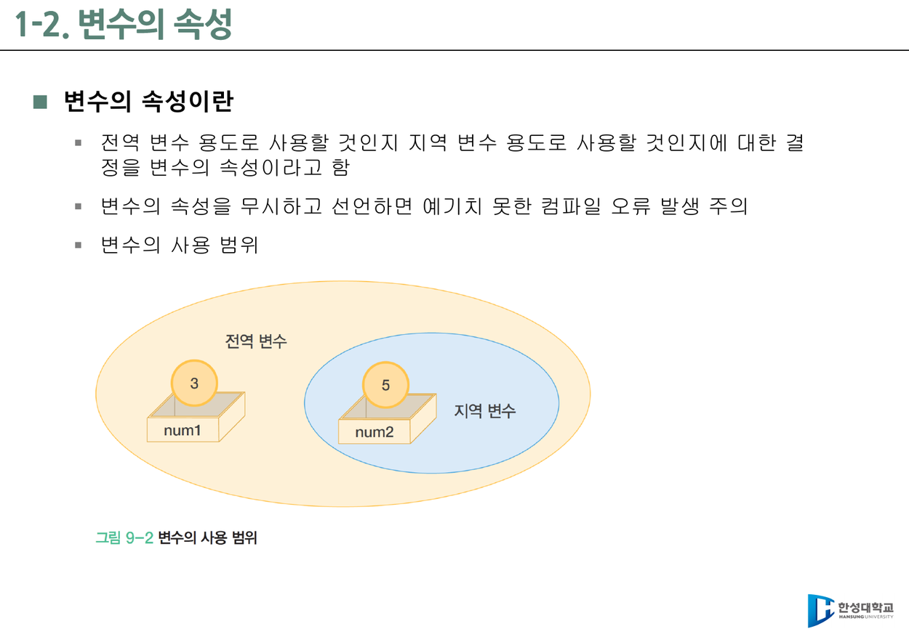
처음에는 스코프와 수명만 확실히 구분해도 충분하다. 스코프는 "이름이 보이는 범위"이고, 수명은 "값이 살아 있는 시간"이다.
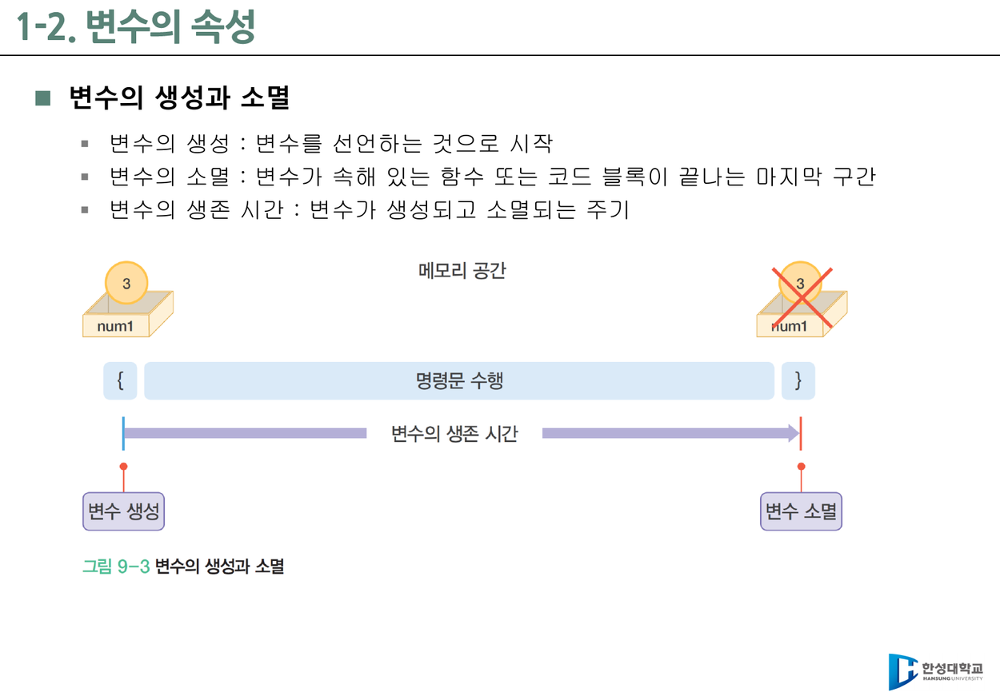
2. 지역변수: 가까운 곳에서만 보이는 안전한 변수¶
지역변수(local variable)는 함수 또는 코드 블록 안에서 선언한 변수다. 선언된 블록을 벗어나면 이름도 사용할 수 없고, 일반 지역변수의 값도 사라진다.
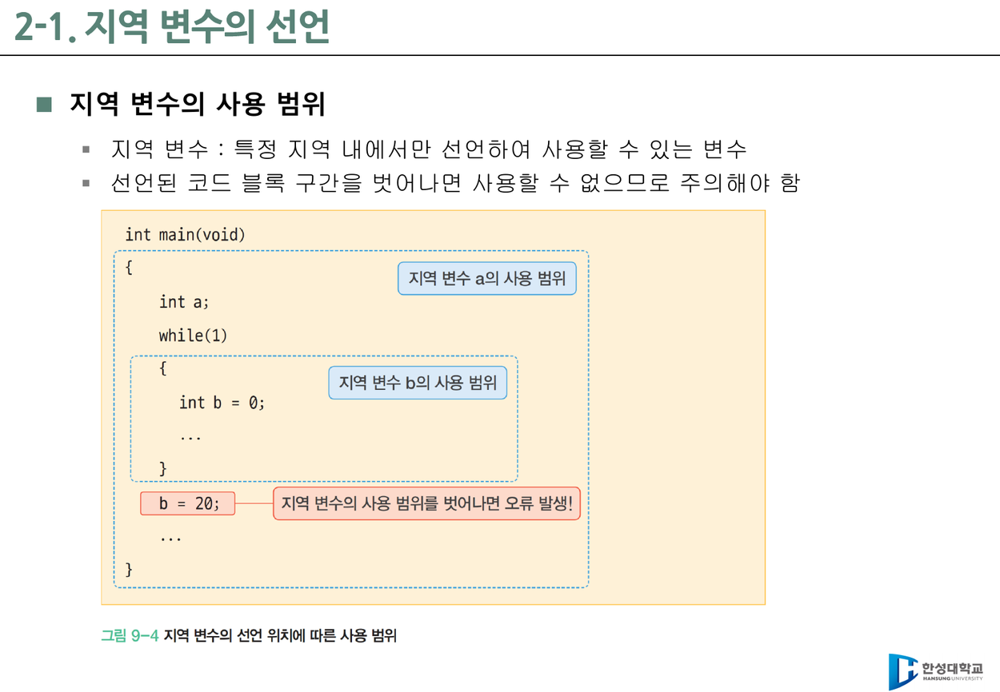
2.1 지역변수 오류 예시: 블록 밖에서 사용¶
다음 예제는 for문 안에서 선언한 sum을 반복문 밖에서 출력하려고 하므로 오류가 난다.
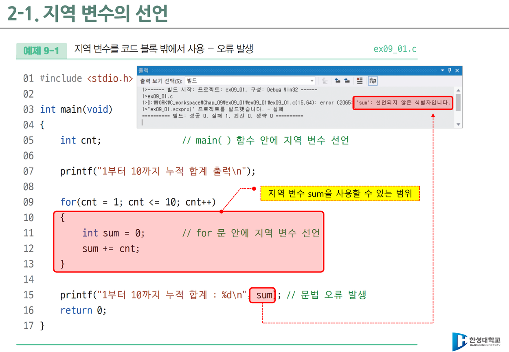
#include <stdio.h>
int main(void)
{
int cnt;
for (cnt = 1; cnt <= 10; cnt++) {
int sum = 0;
sum += cnt;
}
printf("sum = %d\n", sum); // 오류: sum은 여기서 보이지 않는다.
return 0;
}
문법 오류를 고치려면 sum을 반복문 밖에서 선언해야 한다. 그리고 누적 합계가 필요하므로 반복문이 시작되기 전에 한 번만 0으로 초기화해야 한다.
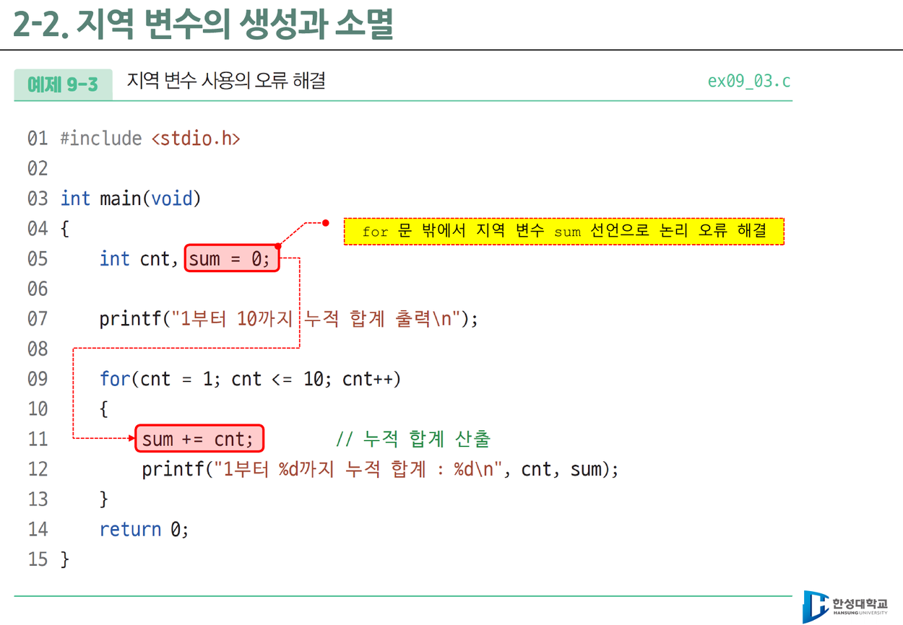
#include <stdio.h>
int main(void)
{
int cnt;
int sum = 0;
for (cnt = 1; cnt <= 10; cnt++) {
sum += cnt;
}
printf("1부터 10까지 누적 합계: %d\n", sum);
return 0;
}
초기화 위치를 같이 봐야 한다
sum을 반복문 안에 두면 매 반복마다 새로 만들어진다. 누적을 원하면 반복문 밖에서 한 번만 초기화해야 한다. 지역변수의 범위와 초기화 위치를 함께 판단해야 한다.
2.2 지역변수 초기화¶
지역변수는 자동으로 0이 된다고 생각하면 안 된다. 전역변수와 정적 변수는 초기화하지 않으면 0으로 시작하지만, 일반 지역변수는 초기화하지 않고 읽으면 쓰레기값이 될 수 있다.
수업에서는 다음 원칙을 사용한다.
| 상황 | 권장 |
|---|---|
| 합계 | int sum = 0; |
| 개수 | int count = 0; |
| 최댓값 | 첫 입력값으로 초기화하거나 충분히 작은 값으로 초기화 |
| 상태 | 명확한 초기 상태 지정, 예: int state = 0; |
2.3 매개변수도 지역변수처럼 동작한다¶
함수의 매개변수(parameter)는 함수가 호출될 때 인수(argument)의 값으로 초기화되는 지역변수라고 볼 수 있다.
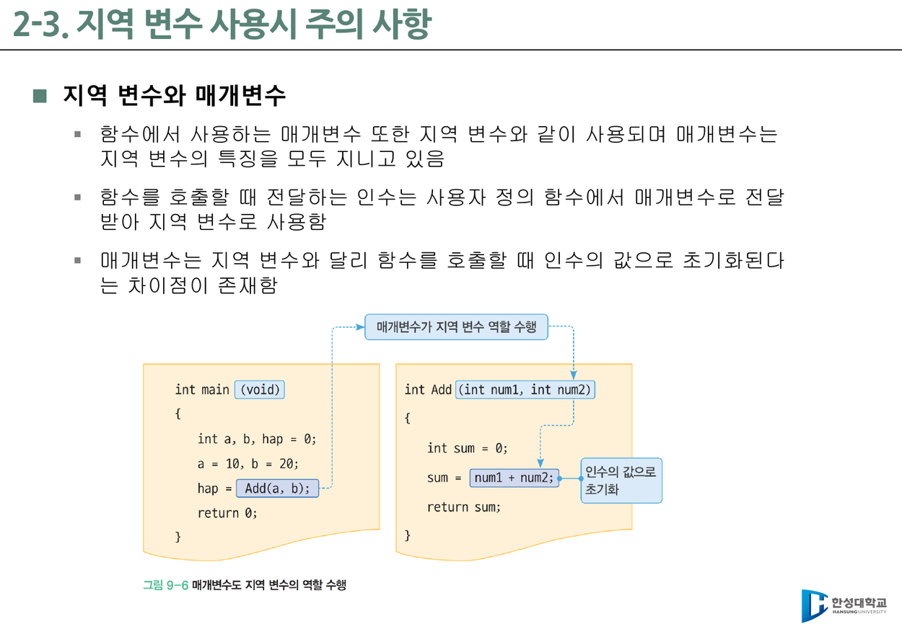
void change(int value)
{
value = 100;
}
int main(void)
{
int score = 70;
change(score);
printf("%d\n", score); // 70
return 0;
}
change() 안의 value는 score의 복사본이다. 함수 안에서 value를 바꾸어도 main()의 score는 바뀌지 않는다. 이것이 C 언어의 값 전달(call by value)이다.
3. 전역변수: 여러 함수가 공유하지만 조심해야 하는 변수¶
전역변수(global variable)는 함수 밖에서 선언한다. 같은 소스 파일 안의 여러 함수에서 접근할 수 있다.
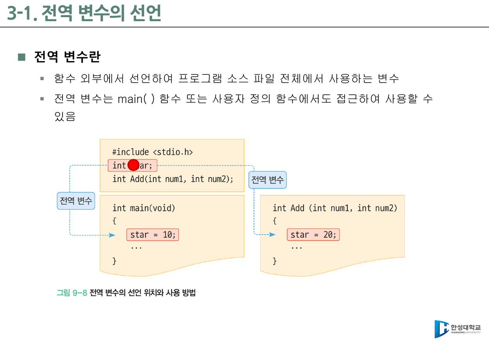
#include <stdio.h>
int g_count = 0; // 전역변수
void add_count(void)
{
g_count++;
}
int main(void)
{
add_count();
add_count();
printf("%d\n", g_count); // 2
return 0;
}
3.1 전역변수의 생성과 소멸¶
전역변수는 프로그램 시작과 함께 만들어지고 프로그램이 끝날 때 사라진다. 초기값을 쓰지 않으면 컴파일러가 0으로 초기화한다.
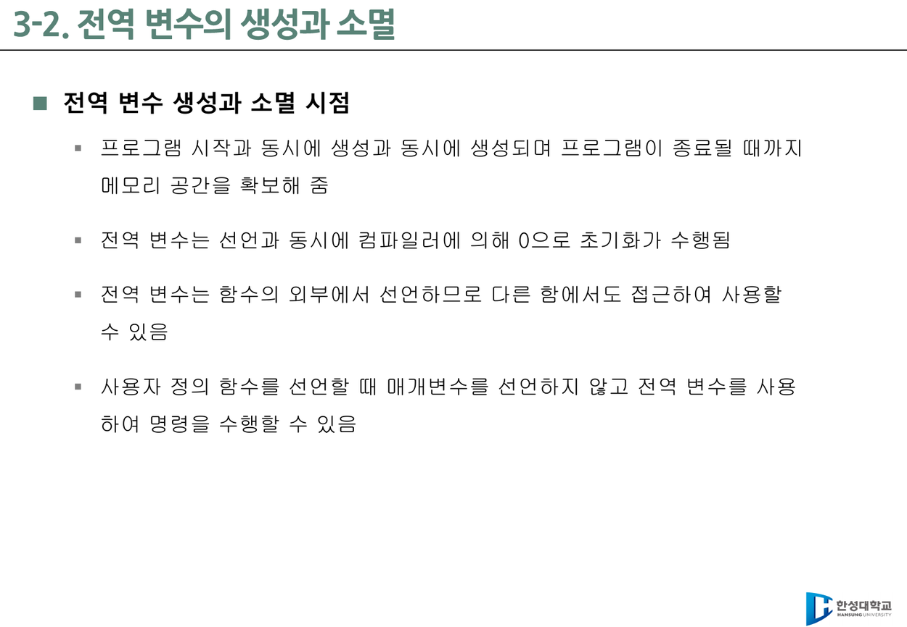
| 변수 | 선언 위치 | 초기화하지 않았을 때 | 수명 |
|---|---|---|---|
| 일반 지역변수 | 함수/블록 안 | 쓰레기값 가능 | 블록 실행 중 |
| 전역변수 | 함수 밖 | 0 | 프로그램 전체 |
| 정적 지역변수 | 함수/블록 안 + static |
0 | 프로그램 전체 |
3.2 전역변수가 편한 경우와 위험한 경우¶
전역변수는 여러 함수가 같은 상태를 공유해야 할 때 편하다. 예를 들어 Arduino에서 현재 주행 상태를 여러 함수가 읽어야 한다면 전역변수를 둘 수 있다.
int current_state = 0; // 0=STOP, 1=RUN
void stop_robot(void)
{
current_state = 0;
}
void run_robot(void)
{
current_state = 1;
}
하지만 전역변수는 아무 함수나 값을 바꿀 수 있으므로 디버깅이 어려워진다. 규모가 커질수록 다음 질문을 해야 한다.
- 이 값은 정말 여러 함수가 직접 바꿔야 하는가?
- 함수의 매개변수와 반환값으로 표현할 수 없는가?
- 전역변수를 바꾸는 함수를 한두 개로 제한할 수 있는가?
수업 기준
전역변수는 "공유해야 하는 상태"에만 사용한다. 임시 계산값, 합계, 반복 횟수처럼 한 함수 안에서 끝나는 값은 지역변수로 둔다.
4. 이름이 같으면 지역변수가 전역변수를 가린다¶
전역변수와 지역변수 이름이 같을 수는 있지만, 좋은 습관은 아니다. 같은 이름이 겹치면 가장 가까운 블록의 지역변수가 우선된다.
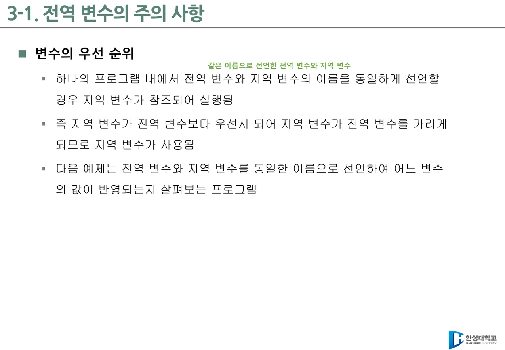
#include <stdio.h>
int number = 3;
void print_number(void)
{
int number = 8;
printf("%d\n", number); // 8
}
int main(void)
{
print_number();
printf("%d\n", number); // 3
return 0;
}
이 현상을 이름 가림(shadowing)이라고 한다. 수업에서는 같은 이름을 일부러 겹치게 만들지 않는 것을 원칙으로 한다.
| 나쁜 이름 겹침 | 더 나은 이름 |
|---|---|
전역 count, 지역 count |
전역 g_total_count, 지역 count |
전역 state, 지역 state |
전역 current_state, 지역 next_state |
전역 sum, 지역 sum |
지역변수만 사용하거나 역할별 이름 사용 |
5. 동적 변수(auto)와 정적 변수(static)¶
원본 자료에서는 지역변수처럼 블록이 끝나면 자동으로 사라지는 변수를 동적 변수(automatic variable) 또는 자동 변수라고 설명한다.
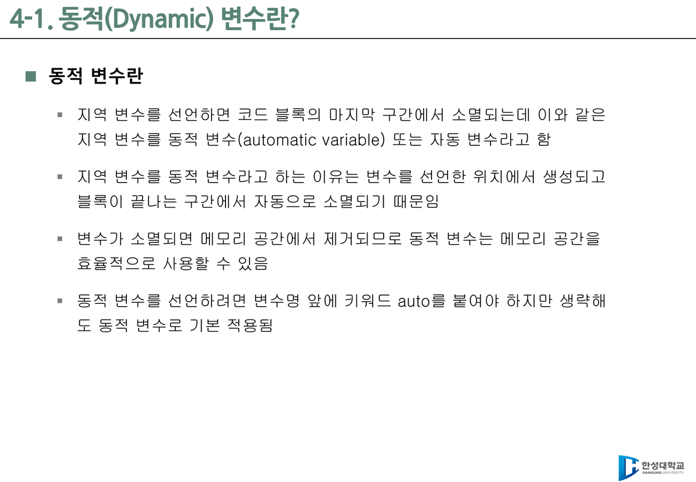
auto 키워드를 붙일 수 있지만, 일반 지역변수는 기본적으로 auto이므로 보통 생략한다.
5.1 정적 변수(static variable)¶
정적 변수는 static 키워드를 사용한다. 지역변수에 static을 붙이면 함수 안에서만 보이지만 프로그램이 끝날 때까지 값이 유지된다.
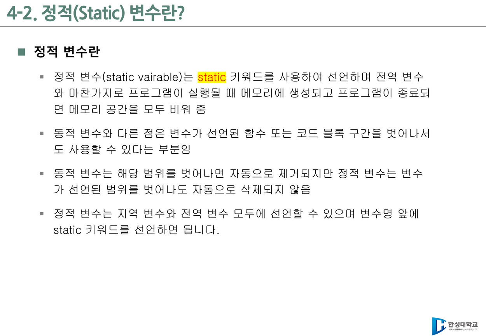
#include <stdio.h>
void count_call(void)
{
static int count = 0;
count++;
printf("count = %d\n", count);
}
int main(void)
{
count_call(); // count = 1
count_call(); // count = 2
count_call(); // count = 3
return 0;
}
5.2 static 초기화¶
정적 변수는 초기화하지 않으면 0으로 초기화된다. 그리고 초기화는 프로그램 실행 중 한 번만 일어난다.
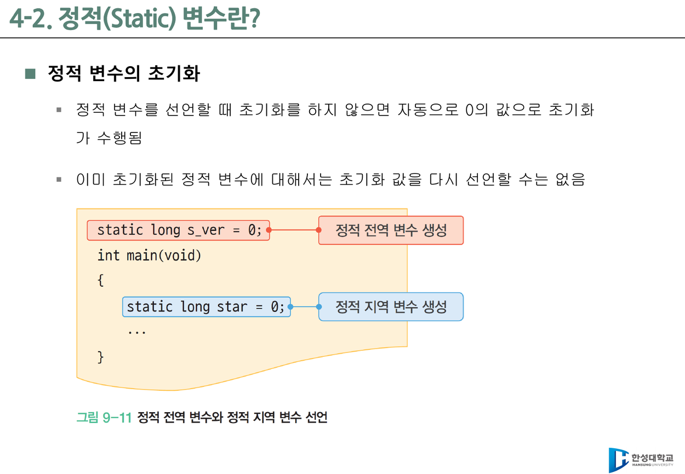
다음 그림처럼 일반 동적 변수는 함수가 호출될 때마다 다시 만들어지지만, 정적 변수는 이전 값을 기억한다.
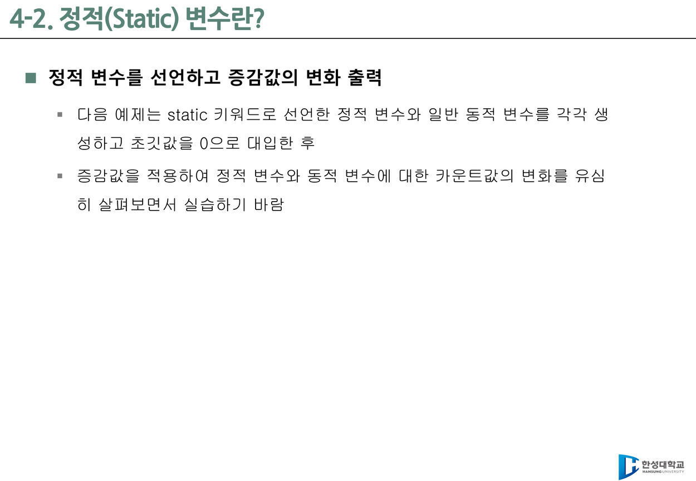
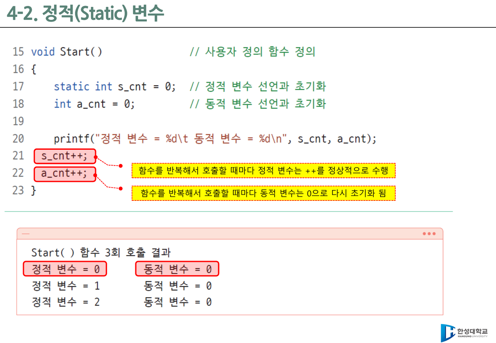
| 구분 | 일반 지역변수 | static 지역변수 |
|---|---|---|
| 보이는 범위 | 블록 안 | 블록 안 |
| 수명 | 블록 실행 중 | 프로그램 전체 |
| 초기화 | 직접 해야 안전 | 생략 시 0, 한 번만 초기화 |
| 대표 사용 | 임시 계산 | 호출 횟수, 누적 상태, 내부 캐시 |
static은 숨겨진 상태다
static 지역변수는 함수 밖에서 직접 볼 수 없어 깔끔하지만, 호출 사이 값이 남는다. 테스트할 때는 이전 호출의 영향이 다음 호출에 이어진다는 점을 반드시 고려해야 한다.
6. 변수의 연결: extern과 static 전역¶
규모가 큰 프로젝트는 소스 파일을 여러 개로 나눈다. 이때 한 파일의 전역변수를 다른 파일에서 사용할지, 아니면 한 파일 안에 숨길지를 결정해야 한다.
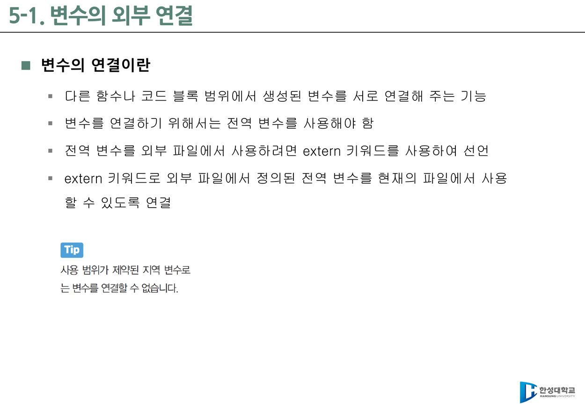
6.1 외부 연결(external linkage)¶
extern은 다른 소스 파일에 정의된 전역변수를 현재 파일에서 사용하겠다고 알리는 선언이다.
/* main.c */
#include <stdio.h>
extern int g_sensor_count;
void update_sensor_count(void);
int main(void)
{
update_sensor_count();
printf("%d\n", g_sensor_count);
return 0;
}
여기서 sensor.c에는 실제 저장 공간이 있고, main.c의 extern int g_sensor_count;는 "다른 파일에 있는 그 변수를 쓰겠다"는 약속이다.
6.2 내부 연결(internal linkage)¶
전역변수 앞에 static을 붙이면 그 변수는 해당 소스 파일 안에서만 보인다.
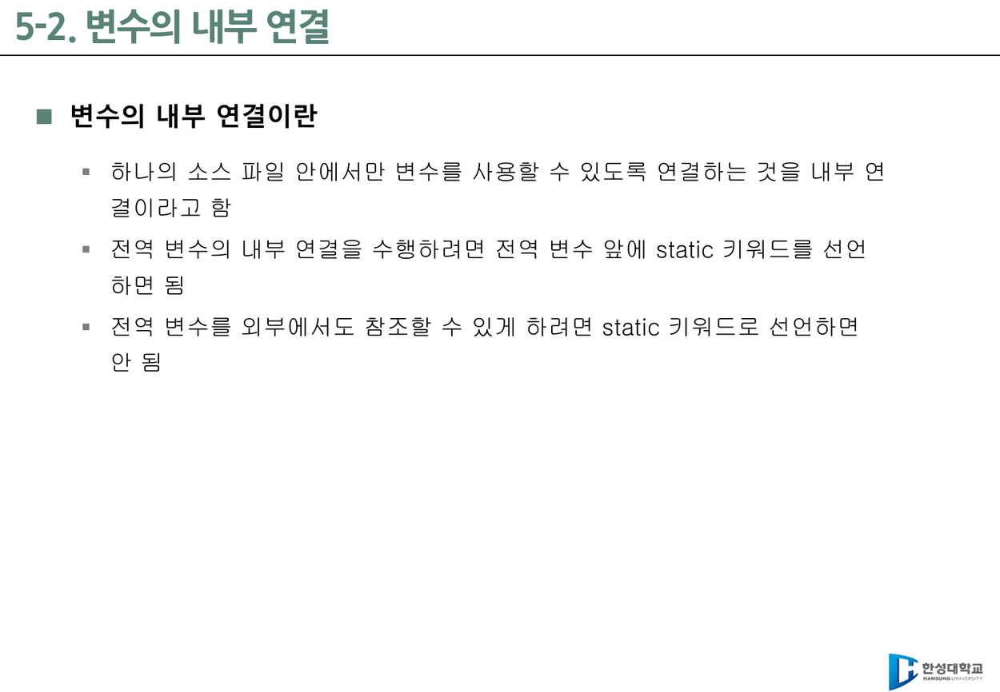
/* motor.c */
static int motor_error_count = 0;
void record_motor_error(void)
{
motor_error_count++;
}
이렇게 하면 다른 파일에서 extern int motor_error_count;로 가져올 수 없다. 파일 내부 구현 세부사항을 숨길 때 사용한다.
6.3 여러 소스 파일 프로젝트의 그림¶
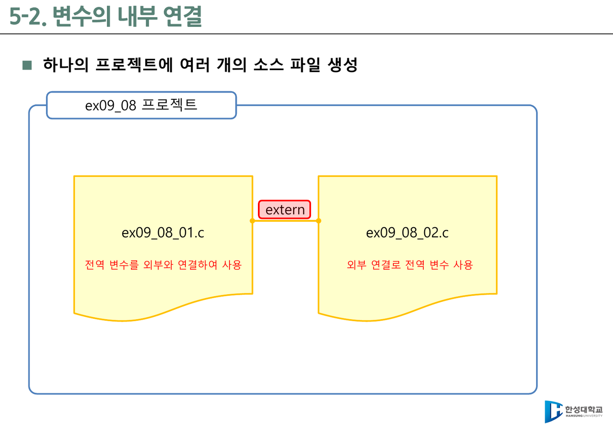
원본 실습의 도전 문제는 전역 변수, 정적 전역 변수, 외부 함수 선언을 구분해 주석으로 표시하는 활동이다.
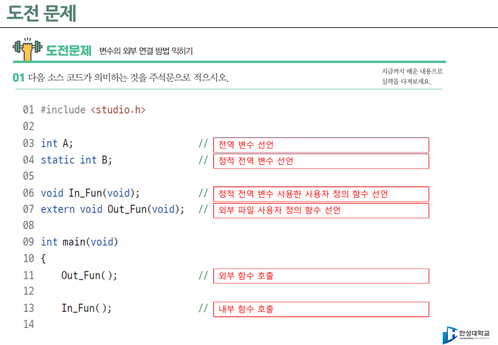
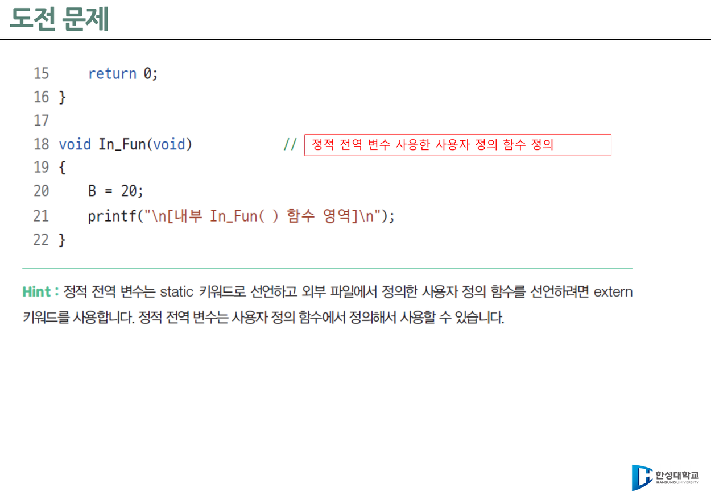
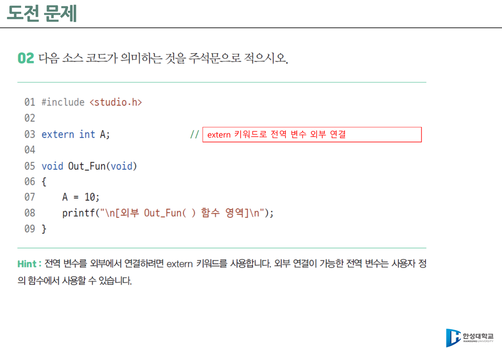
실무식 정리
여러 파일에서 공유해야 하는 전역변수는 가능하면 줄이고, 꼭 필요하다면 extern 선언을 헤더 파일에 모아 관리한다. 파일 내부에서만 쓰는 전역변수와 보조 함수는 static으로 숨겨 충돌을 줄인다.
7. register 변수¶
register 변수는 CPU 레지스터 사용을 컴파일러에게 요청하는 키워드다.
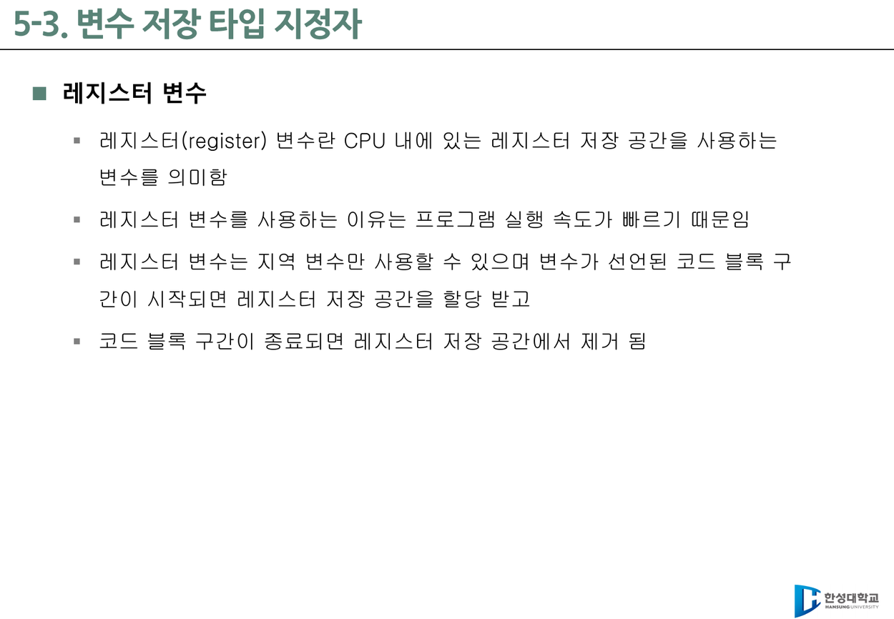
예전에는 반복문에서 자주 쓰는 값을 레지스터에 두면 빠를 수 있었다. 하지만 현대 컴파일러는 최적화를 스스로 잘 수행하므로 초급 수업에서는 거의 쓰지 않는다.
주의할 점은 register 변수에는 주소 연산자 &를 사용할 수 없다는 것이다.
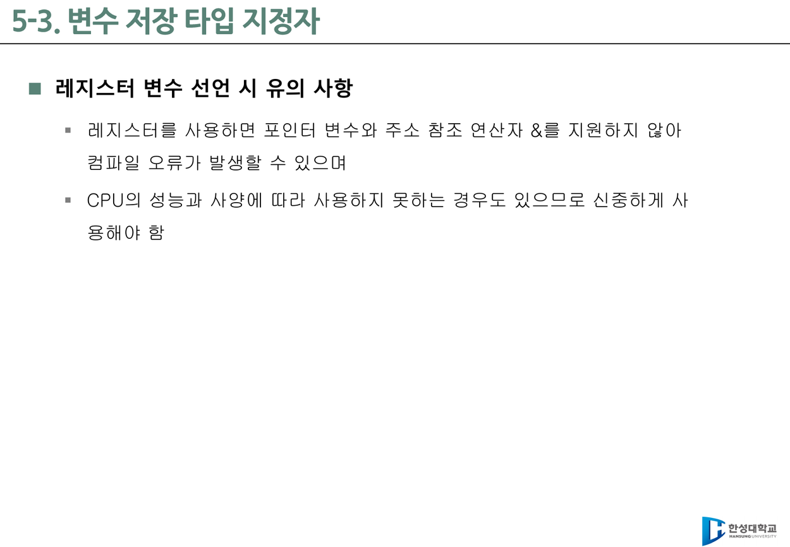
void bad_example(void)
{
register int count = 0;
int *ptr = &count; // 오류 가능: register 변수의 주소를 얻을 수 없다.
}
수업에서는 register를 "과거 최적화 힌트이며, 포인터와 주소 연산에서 제약이 있다" 정도로 이해하면 충분하다.
8. 메모리 영역으로 다시 정리¶
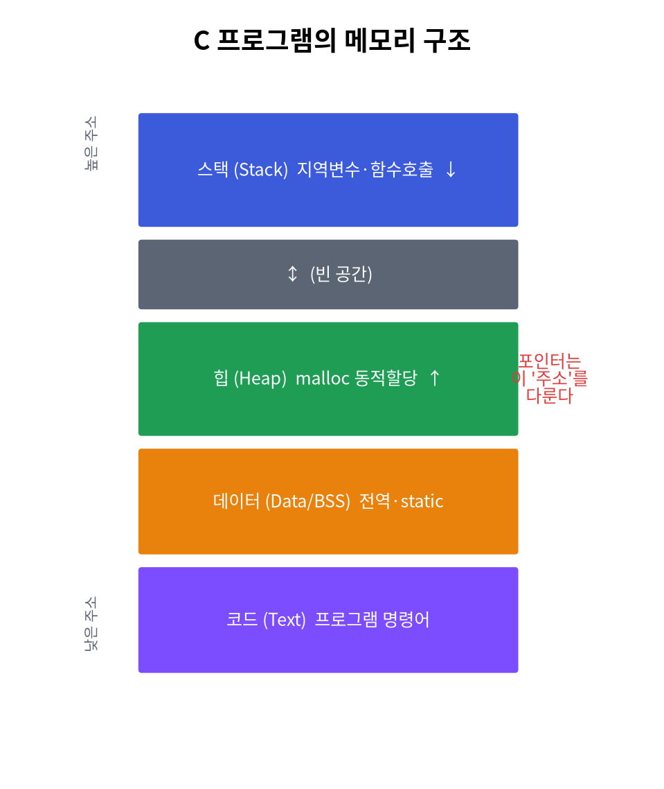
| 메모리 영역 | 대표 저장 대상 | 9주차와의 연결 |
|---|---|---|
| 코드 영역 | 프로그램 명령어 | 함수의 실행 코드 |
| 데이터/BSS 영역 | 전역변수, static 변수 |
프로그램 전체 수명 |
| 힙 영역 | malloc 등 동적 할당 |
12주차 이후 심화 |
| 스택 영역 | 일반 지역변수, 매개변수, 함수 호출 정보 | 함수 호출 중 수명 |
스택에 있는 지역변수는 함수가 끝나면 사라진다. 데이터 영역에 있는 전역변수와 정적 변수는 프로그램이 끝날 때까지 남는다. 따라서 static 지역변수는 "보이는 범위는 지역변수처럼 좁지만, 수명은 전역변수처럼 긴 변수"라고 정리할 수 있다.
9. C 실습 예제: 한 파일에서 차이를 눈으로 확인¶
예제 파일: code/c/examples/ex09_scope_lifetime.c
#include <stdio.h>
int global_count = 0;
void local_counter(void);
void static_counter(void);
void global_counter(void);
void shadowing_demo(void);
void parameter_demo(int value);
int main(void)
{
local_counter();
local_counter();
static_counter();
static_counter();
global_counter();
global_counter();
shadowing_demo();
int score = 70;
parameter_demo(score);
printf("main score = %d\n", score);
return 0;
}
예상 출력의 핵심은 다음과 같다.
| 함수 | 변수 위치 | 두 번 호출했을 때 |
|---|---|---|
local_counter |
일반 지역변수 | 매번 1 |
static_counter |
static 지역변수 | 1, 2 |
global_counter |
전역변수 | 1, 2 |
parameter_demo |
매개변수 | 함수 안 값만 바뀜 |
10. Arduino UNO R4 WiFi 연결: 상태는 어디에 둘까?¶
Arduino에서는 loop()가 계속 반복 호출된다. 따라서 "이전 반복에서 무슨 일이 있었는지"를 기억해야 하는 경우가 많다.
예제 파일: code/arduino/09_scope_state/09_scope_state.ino
char currentState[] = "IDLE"; // 여러 함수가 함께 보는 전역 상태
void handleCommand(char cmd)
{
static int commandCount = 0; // 함수 밖에서는 보이지 않지만 호출 사이 값 유지
commandCount++;
if (cmd == 'r') {
setState("RUN");
} else if (cmd == 's') {
setState("STOP");
}
Serial.print("commands=");
Serial.println(commandCount);
}
이 예제에서 currentState는 여러 함수가 함께 읽고 쓰므로 전역으로 두었다. 반면 commandCount는 명령 처리 함수 안에서만 의미가 있으므로 static 지역변수로 숨겼다.
| 값 | 추천 위치 | 이유 |
|---|---|---|
| 현재 주행 상태 | 전역변수 또는 상태 구조체 | 여러 함수가 함께 사용 |
| 명령 처리 횟수 | handleCommand()의 static 지역변수 |
함수 내부 통계 |
| 한 번 계산한 거리 | 지역변수 | 함수 밖에서 필요 없음 |
| 이전 센서값 | static 지역변수 또는 구조체 필드 |
다음 호출 때 비교 필요 |
11. ROS2 콜백과의 연결¶
ROS2에서는 메시지가 들어올 때 콜백 함수가 호출된다. C++ 노드에서는 보통 전역변수보다 클래스 멤버 변수로 상태를 보관한다. 그래도 원리는 9주차와 같다.
class RobotNode : public rclcpp::Node {
public:
RobotNode() : Node("robot_node"), message_count_(0) {}
private:
void scanCallback(const sensor_msgs::msg::LaserScan::SharedPtr msg)
{
message_count_++;
// msg를 해석해 현재 상태를 갱신한다.
}
int message_count_;
};
message_count_는 전역변수가 아니라 객체 내부 상태다. 전역변수처럼 오래 살지만, 아무 코드에서나 직접 바꿀 수 없기 때문에 더 안전하다. 9주차의 스코프 개념은 이후 C++ 클래스, ROS2 노드, 콜백 설계로 이어진다.
12. 실습 과제¶
실습 9-1 - 지역변수 범위 찾기¶
다음 코드에서 컴파일 오류가 나는 줄을 찾고, 이유를 설명한다.
수정 방법:
value를if문 밖에서 선언한다.- 또는 출력도
if문 안에서 수행한다. - 실제로 어느 방법이 더 좋은지는
value가 필요한 범위로 판단한다.
실습 9-2 - 누적 합계 오류 수정¶
원본 실습의 sum 예제를 완성한다.
sum이 보이는 범위를 표시한다.sum을 반복문 밖으로 옮긴다.- 초기화를 반복문 전에 한 번만 수행한다.
- 결과가
55인지 확인한다.
실습 9-3 - local/static/global 카운터 비교¶
ex09_scope_lifetime.c를 실행하고 다음 표를 채운다.
| 함수 | 1회 호출 | 2회 호출 | 왜 그런가 |
|---|---|---|---|
local_counter |
|||
static_counter |
|||
global_counter |
실습 9-4 - Arduino 상태 저장 위치 결정¶
09_scope_state.ino를 업로드하고 시리얼 모니터에서 다음 명령을 보내 본다.
| 명령 | 의미 |
|---|---|
r |
RUN 상태 |
s |
STOP 상태 |
i |
IDLE 상태 |
? |
도움말 |
관찰할 점:
loop()가 계속 반복되어도 전역 상태는 유지된다.handleCommand()의static int commandCount는 명령을 보낼 때마다 증가한다.- 일반 지역변수로 바꾸면 호출마다 다시 0이 된다.
실습 9-5 - extern 도전 문제¶
원본 도전 문제처럼 main.c와 state.c 두 파일을 만든다고 가정한다.
/* state.c */
int robot_state = 0;
static int error_count = 0;
void set_robot_state(int state)
{
robot_state = state;
}
질문:
main.c에서robot_state를 읽으려면 어떤 키워드가 필요한가?error_count를main.c에서 직접 읽을 수 없는 이유는 무엇인가?error_count를 꼭 읽어야 한다면 전역으로 열어야 하는가, 아니면 함수로 값을 반환해야 하는가?
13. 자주 막히는 지점¶
| 막히는 지점 | 증상 | 해결 |
|---|---|---|
| 블록 안 변수 사용 | "선언되지 않은 식별자" 오류 | 변수가 필요한 범위보다 안쪽에 선언되지 않았는지 확인 |
| 지역변수 초기화 누락 | 실행할 때 값이 이상함 | 선언과 동시에 초기화 |
| 전역변수 남용 | 어디서 값이 바뀌었는지 추적 어려움 | 값을 바꾸는 함수를 제한하거나 매개변수/반환값 사용 |
static 오해 |
함수 호출마다 0으로 돌아간다고 착각 | 초기화는 한 번, 값은 계속 유지 |
extern 오해 |
extern만 쓰면 변수가 생긴다고 착각 |
실제 정의는 한 파일에 필요 |
static 전역 오해 |
다른 파일에서 extern으로 못 가져옴 |
파일 내부 전용 변수라는 뜻 |
14. 형성평가 체크포인트¶
- 지역변수와 전역변수의 선언 위치를 구분할 수 있다.
- 스코프와 수명을 다른 말로 설명할 수 있다.
- 일반 지역변수와
static지역변수의 출력 차이를 예측할 수 있다. - 매개변수가 지역변수처럼 동작한다는 점을 설명할 수 있다.
- 전역변수와 지역변수 이름이 같을 때 지역변수가 우선됨을 설명할 수 있다.
-
extern선언과 실제 전역변수 정의를 구분할 수 있다. - Arduino/ROS2 상태 변수의 저장 위치를 근거를 들어 선택할 수 있다.
📚 참고 레퍼런스 (외부)¶
- 스코프·저장기간 https://en.cppreference.com/w/c/language/storage_duration
- 변수 범위 https://en.wikipedia.org/wiki/Scope_(computer_science)
- 전체 정리: 참고 자료 모음
연습문제¶
for문 안에서 선언한int sum을for문 밖에서 출력하면 왜 오류가 나는가?- 일반 지역변수는 초기화하지 않으면 항상 0인가?
static int n = 0; n++;을 가진 함수를 3번 호출하면 마지막n은 얼마인가?- 전역변수와 지역변수의 이름이 같으면 어느 변수가 우선되는가?
extern int count;는 변수를 새로 만드는 코드인가?- 전역변수 앞에
static을 붙이면 다른 소스 파일에서 사용할 수 있는가? register변수의 주소를&로 얻으려고 하면 왜 문제가 될 수 있는가?- Arduino에서 버튼 누른 횟수처럼 함수 내부에서만 필요한 누적값은 지역, 전역, static 지역 중 어디에 두는 것이 좋은가?
정답 및 해설
sum의 스코프가for문 블록 안이기 때문이다. 블록을 벗어나면 이름을 사용할 수 없다.- 아니다. 일반 지역변수는 초기화하지 않고 읽으면 쓰레기값이 될 수 있다.
3이다.static지역변수는 호출 사이 값이 유지된다.- 더 가까운 블록의 지역변수가 우선된다. 이를 이름 가림(shadowing)이라고 한다.
- 아니다. 다른 파일에 정의된 전역변수를 사용하겠다는 선언이다. 실제 정의는 별도로 있어야 한다.
- 사용할 수 없다.
static전역변수는 해당 소스 파일 내부에서만 연결된다. register변수는 레지스터 저장을 요청하는 변수라 주소 연산자 사용이 제한될 수 있다.static지역변수가 적절하다. 함수 밖에서는 숨기면서 호출 사이 값은 유지할 수 있다.
참조¶
- 원본 PDF:
9-1. 함수와 변수,9-2. 함수와 변수 실습 - C 예제:
code/c/examples/ex09_scope_lifetime.c - Arduino 예제:
code/arduino/09_scope_state/09_scope_state.ino - 배경 개념: Arduino R4 예제, C와 ROS2